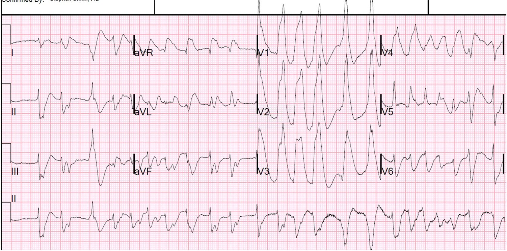
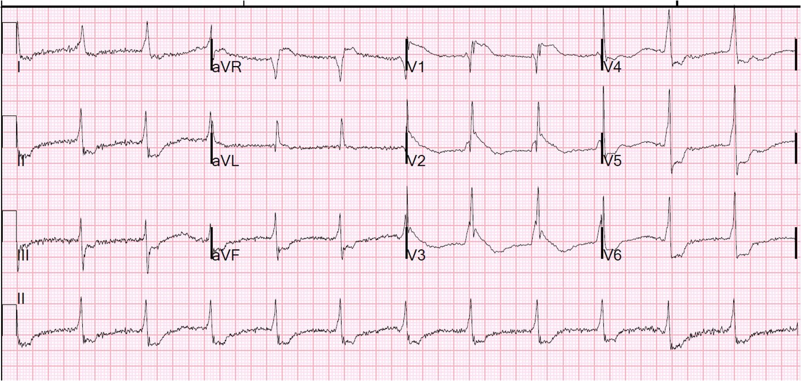
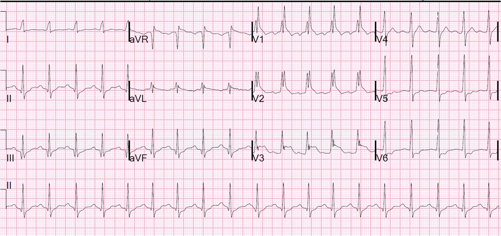
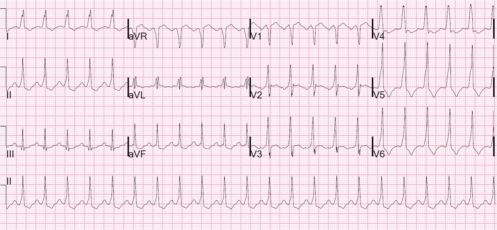

19/09/2014 — Rung thất kéo dài (63 phút), sau đó là sốc. Chuyện gì đang xảy ra?
Bản dịch tiếng Việt của bài "Prolonged (63 minutes) Ventricular Fibrillation, Followed by Shock. What’s going on?" – Dr. Smith’s ECG Blog. Giữ nguyên toàn bộ 5 hình ảnh và 3 video của bản gốc.
Một bệnh nhân trung niên đến viện trong tình trạng rung thất (ventricular fibrillation) kéo dài sau 5 phút ngừng tuần hoàn (down time) và 45 phút hồi sức trước viện do nhân viên cấp cứu ngoài viện thực hiện, có dùng đường thở King (King airway), thiết bị LUCAS (ép tim cơ học), thiết bị ngưỡng hít vào (Inspiratory Threshold Device – ITD, ResQPod), khử rung 4 lần và epinephrine x 3 qua đường truyền trong xương (IO). Bệnh nhân vẫn tiếp tục nuốt và thở trong khi được hồi sức (gợi ý ép tim có hiệu quả).
Tại khoa cấp cứu (ED), chúng tôi nhận thấy thông khí qua đường thở King có hiệu quả. Tiếp tục ép tim bằng LUCAS, và CO2 cuối thì thở ra (end-tidal) là 26 mm Hg (bằng chứng ủng hộ rằng ép tim có hiệu quả và ủng hộ khả năng tiên lượng thần kinh tốt).
Chúng tôi bóp bóng thông khí chậm, 10 lần mỗi phút, theo đèn báo trên ITD. Sau 300 mg amiodarone, 100 mg lidocaine và 500 mcg/kg esmolol + truyền liên tục 50 mcg/kg/phút, cùng thêm epinephrine và cả bicarbonate, và thêm một lần khử rung, lần kiểm tra nhịp lúc 18 phút sau khi đến viện cho thấy một nhịp có tổ chức, phần lớn QRS hẹp, nhưng chậm. Chúng tôi không bắt được mạch. Siêu âm tim tại giường, mặt cắt dưới sườn, cho thấy như sau:
Đây là hướng hiển thị đảo ngược: các thất nằm ở phía trên bên phải và các nhĩ ở phía dưới bên trái. Thất phải (RV) nằm gần đầu dò nhất và rất nhỏ (về cơ bản loại trừ thuyên tắc phổi là nguyên nhân). Thất trái (LV) có thành cực kỳ dày và buồng LV rất nhỏ (có rất ít máu để bơm đi)
Tôi diễn giải hình ảnh này là bệnh cơ tim phì đại (hypertrophic cardiomyopathy, HOCM), và nghi ngờ HOCM là nguyên nhân gây ngừng tim, vì bệnh này được biết rõ là gây rung thất.
Tôi đặt đầu dò mạch máu lên động mạch cảnh phải, dùng Doppler năng lượng (power Doppler), và hình ảnh cho thấy dòng chảy tốt trong động mạch cảnh, tương ứng với các nhát co bóp của tim.
Một điện tâm đồ được ghi lại:


Ca bệnh tiếp diễn:
Bệnh nhân vẫn tụt huyết áp rất nặng. Do thể tích thất trái rất nhỏ và nhu cầu bù dịch ở những bệnh nhân có thành thất rất dày và buồng thất trái hẹp như khe [như ta thấy trong HOCM (Xem ca bệnh rất bổ ích này)], chúng tôi bắt đầu bù dịch.
Một điện tâm đồ khác được ghi 5 phút sau điện tâm đồ đầu tiên:


Ý kiến của tôi là đây không phải STEMI và chúng tôi đã không kích hoạt phòng thông tim (cath lab).
Vì bệnh nhân nhịp chậm và tụt huyết áp, chúng tôi cho bệnh nhân epinephrine liều bơm nhanh (push dose), và bắt đầu truyền norepinephrine liên tục. Ngừng esmolol. Tiếp tục truyền dịch. Huyết áp và mạch tăng lên.
pH máu tĩnh mạch là 7.16, pCO2 48, bicarbonate 17 và lactat 6.8. K = 3.6 mEq/L.
Rút đường thở King và đặt nội khí quản cho bệnh nhân. Điện tâm đồ thứ ba được ghi thêm 20 phút sau đó:


Lúc đó vẫn chưa tìm được hồ sơ bệnh án nào. Vào thời điểm này, bác sĩ tim mạch được gọi đến, ông nhận ra bệnh nhân và cho biết bệnh nhân bị HOCM. Ông ủng hộ việc đánh giá các động mạch vành, và vì vậy phòng thông tim đã được kích hoạt.
Bệnh nhân trở nên ổn định huyết động hơn. Siêu âm tim tại giường được làm lại:
Đây là mặt cắt trục ngắn cạnh ức, cho thấy phì đại đồng tâm rất dày, nhưng lúc này thất trái đổ đầy tốt hơn, với cung lượng tim hiệu quả hơn nhiều
Đây là mặt cắt trục dọc cạnh ức:
Một đường động mạch được đặt, và huyết áp đo qua đường động mạch là 190/120, với tần số tim 130. Độ bão hòa O2 giảm và X-quang ngực cho thấy phù phổi. Ngừng truyền dịch, tiêm lại liều bolus esmolol và truyền liên tục trở lại. Huyết áp cải thiện ở mức 130/80 với mạch 90-120
Vì khó đặt đường vào cho ống thông làm mát, đã quyết định hoãn kiểm soát thân nhiệt mục tiêu (targeted temperature management) cho đến sau khi chụp mạch vành.
Ngay trước khi chuyển lên phòng thông tim, điện tâm đồ này được ghi lại:


Sau đó được biết bệnh nhân có tiền sử HOCM và WPW, và cả tiền sử đột quỵ thiếu máu não nặng do thuyên tắc vì rung nhĩ kịch phát, có chuyển dạng xuất huyết. Vì nguy cơ chảy máu này, và cũng vì bác sĩ không tin rằng bệnh nhân đang bị hội chứng vành cấp, nên không cho aspirin, Plavix hay heparin. Cũng đã cân nhắc khả năng toàn bộ diễn biến này được khởi phát bởi một xuất huyết não gây ra bệnh cơ tim do stress. Vì vậy bệnh nhân được chụp CT sọ não trước khi chụp mạch vành. Kết quả không có dấu hiệu mới, chỉ có ổ đột quỵ thiếu máu cũ (nhũn não).
Chụp mạch vành cho thấy các động mạch vành bình thường.
Troponin I đỉnh là 51 ng/mL (nhồi máu cơ tim típ 2 diện rộng)
Siêu âm tim chính thức cho thấy HOCM không có tắc nghẽn đường ra.
Làm mát: Bệnh nhân được kiểm soát thân nhiệt mục tiêu.
Đến 72 giờ, bệnh nhân không có dấu hiệu tỉnh lại, nhưng đến 96 giờ đã từng lúc làm theo y lệnh. Đến 7 ngày, bệnh nhân đã “tương tác rất tốt.”
Những điểm cần học:
1. Với kỹ thuật hồi sinh tim phổi xuất sắc, bệnh nhân rung thất có thể được hồi sức thành công ngay cả sau thời gian ngừng tuần hoàn (down time) rất dài. Trong ca này, ngay cả khi thất trái hầu như không thể đổ đầy, hồi sinh tim phổi vẫn đủ hiệu quả để duy trì tưới máu đầy đủ. Ép ngực tốt, đúng tần số (ít nhất 100) và đúng độ sâu (ít nhất 5 cm, hay 2 inch), để lồng ngực giãn trở lại, ITD (ResQPod), thông khí chậm (10/phút), là một số trong rất nhiều can thiệp then chốt có thể dẫn tới hồi sức thành công. Dù là trùng hợp hay không trong ca này, chúng tôi đã có tỷ lệ chuyển nhịp rung thất tốt khi dùng esmolol.
2. Không phải mọi ca ngừng tim, kể cả khi có ST chênh lên bệnh lý, đều do STEMI. Các bệnh cơ tim, kết hợp với ngừng tim, có thể tạo ra những điện tâm đồ kỳ dị. Bệnh cơ tim do stress có thể gây rung thất và ST chênh lên, và những hình ảnh giả STEMI (PseudoSTEMI) khác có thể hiện diện nhưng không liên quan đến rung thất.
3. Điện tâm đồ có thể rất kỳ dị ngay sau khử rung. Hãy chờ vài phút để ghi một điện tâm đồ khác trước khi đi đến kết luận.
4. Siêu âm tại giường có giá trị vô cùng lớn trong ngừng tim, cả để đánh giá chức năng tim lẫn để đánh giá dòng máu động mạch cảnh.
5. Có thể không bắt được mạch dù tưới máu qua động mạch cảnh vẫn tốt. Hãy dùng siêu âm Doppler động mạch cảnh để đánh giá dòng chảy động mạch cảnh. Theo hiểu biết của tôi, chưa có y văn nào trên người về vấn đề này.
6. CO2 cuối thì thở ra (end-tidal) là một chỉ dấu tốt cho hiệu quả của ép ngực.
–Theo tổng quan hệ thống này trên tạp chí Resuscitation năm 2013, giá trị dưới 10 mmHg (1,33 kPa) đi kèm với tỷ lệ tái lập tuần hoàn tự nhiên rất thấp.
–Trong tổng quan hệ thống này trên tạp chí J Int Care Med năm 2014, etCO2 trung bình ở những bệnh nhân tái lập tuần hoàn tự nhiên (ROSC) là 26 mm Hg (3,5 kPa)
7. Không đưa ra bất kỳ tiên lượng thần kinh xấu nào trước 72 giờ sau ngừng tim, và tốt hơn nữa là chờ lâu hơn. Đây là một bài báo năm 2014 về chủ đề này của nhóm Keith Lurie tại HCMC và Đại học Minnesota, và một bài khác (mà tôi là đồng tác giả) của HCMC vào mùa hè năm 2014 này.
8. Khi nạn nhân ngừng tim có tiền sử “cục máu đông” và đang dùng coumadin, phải nghĩ tới chẩn đoán thuyên tắc phổi. Tuy nhiên, rung thất là nhịp khởi đầu hiếm gặp trong thuyên tắc phổi:
–Trong nghiên cứu này, 5% số ca ngừng tim do rung thất là do PE: rung thất là nhịp khởi đầu trong PE ở 3 trên 60 ca. Mặt khác, nếu nhịp khởi đầu là PEA, thì nhiều khả năng là thuyên tắc phổi. Khi có rung thất trong PE, đó không phải là nhịp khởi đầu, mà xuất hiện sau khi PEA kéo dài làm cơ tim thiếu máu cục bộ.
—Một nghiên cứu khác của Courtney và Kline ghi nhận rằng, trong các ca ngừng tim có khám nghiệm tử thi, nhịp khởi đầu là VF/VT có tỷ số chênh (odds ratio) là 0,02 đối với thuyên tắc phổi diện rộng là nguyên nhân, so với 41,9 đối với PEA.

===================================
BÌNH LUẬN CỦA TÔI, bởi KEN GRAUER, MD (27/6/2020):
===================================
Khi xem lại loạt 4 bản ghi ở trên để chủ động tìm kiếm những bình luận sâu sắc về các nhịp tim khác nhau — tôi thấy mình liên tục quay về Điểm cần học thứ 3 của Dr. Smith đã nêu ở trên = “Điện tâm đồ có thể rất kỳ dị ngay sau khử rung. Hãy chờ vài phút để ghi một điện tâm đồ khác trước khi rút ra kết luận.” Dù rất muốn đưa ra một cách diễn giải mới, dứt khoát cho các nhịp trong ca này — tôi đã không làm được. Thay vào đó — tôi sẽ chỉ bổ sung Điểm cần học thứ 9 này:
- Hãy chấp nhận rằng bệnh nhân đang trong giai đoạn quanh hồi sức của bạn có thể không cho bạn một bản ghi dễ diễn giải nào. Khi điều này xảy ra — Hãy bằng lòng với những điều cơ bản. Rung thất và các nhịp nhanh thất ác tính cần được sốc điện. Ngược lại — các nhịp như trong bản ghi thứ 2 ở trên không cần sốc điện — bởi vì dù có nhiều điều tôi không thể giải thích trên điện tâm đồ thứ 2 này — nhịp vẫn đều (~70/phút) — với dáng vẻ trên thất rõ rệt của bản ghi (dù không thấy sóng P).
Các nhịp như trong bản ghi thứ 1 ở trên có thể không thể diễn giải được. Ví dụ, phần đầu của phức bộ QRS hẹp và không đều hoàn toàn trong nửa đầu của bản ghi thứ 1 này. Hình ảnh này trông giống AFib nhanh. Nhưng theo Dr. Smith — các phức bộ QRS giãn rộng, vô định hình hơn nhiều và không đều hoàn toàn ở nửa sau của bản ghi thứ 1 này trông giống PMVT (nhịp nhanh thất đa dạng – PolyMorphic VT) hơn nhiều. Nếu nhịp mà chúng ta thấy ở nửa sau của bản ghi thứ 1 này kéo dài và kèm theo mất ổn định huyết động — thì nó sẽ trở thành “một nhịp cần được sốc điện”.
- LƯU Ý: Sóng Osborn (Osborn waves) không chỉ gặp trong hạ thân nhiệt. Chúng cũng có thể gặp trong ngừng tim do rung thất (Xem Bình luận của tôi trong bài đăng ngày 22 tháng Mười Một năm 2019). Tôi tin rằng chỗ khía mà chúng ta thấy ở chuyển đạo V3 (và có thể cả ở V2) trong bản ghi thứ 2 và thứ 3 ở trên có thể là hậu quả của sóng Osborn — điều có thể góp phần tạo nên hình ảnh điện tâm đồ kỳ dị.
- Cuối cùng — các bản ghi liên tiếp thu được trong lúc hồi sức (và lý tưởng là tìm được một bản ghi trước đây của bệnh nhân để so sánh) — có thể giúp ích rất nhiều trong việc ghép nối thành một bức tranh nhất quán. Trong ca này — việc biết được rằng bệnh nhân ngừng tim này thực sự có tiền sử bệnh cơ tim phì đại và WPW, đã đóng vai trò then chốt trong việc làm sáng tỏ một số thay đổi hình thái QRS đang thấy. Ví dụ, nhịp nhanh xoang chắc chắn được thấy trong bản ghi thứ 3 ở trên. Đối với bản ghi thứ 3 này, rồi bản ghi thứ 4 theo sau nó — xem 2 điện tâm đồ này nối tiếp nhau cho thấy thay đổi chính là sự xuất hiện mới của trát đậm phần đầu phức bộ QRS ở nhiều chuyển đạo trong bản ghi thứ 4 mà không thấy trong bản ghi thứ 3. Giờ đây có thể nhận ra trát đậm phần đầu ở nhiều chuyển đạo này chính là sóng delta (delta waves) ở bệnh nhân mà chúng ta đã biết là có WPW (dù khoảng PR ở nhiều chuyển đạo trông không ngắn như thường thấy trong WPW).
ĐIỀU CỐT LÕI: Nhờ nỗ lực tuyệt vời của đội hồi sức — bệnh nhân này đã được cứu sống mặc dù chưa có chẩn đoán rối loạn nhịp dứt khoát. Chẩn đoán rối loạn nhịp dứt khoát đơn giản là không thể có được trong giai đoạn đầu của hồi sức — nhưng cũng không cần thiết, vì bệnh nhân đã được cứu sống. Điện tâm đồ có thể trông kỳ dị trong một thời gian sau khử rung …